ISOLA BELLA/STRESA,LAGO
MAGGIORE
ベッラ島/マッジョーレ湖
マッジヨーレ湖に浮かぶ奇想天外の島、ベッラ島。
かつてこの湖の持ち主であったボロッメオ家の建てた別荘である。
小さな島に溢れんばかりの装飾を施したコッテコテ具合はマッジョーレ湖最大の見どころでもある。
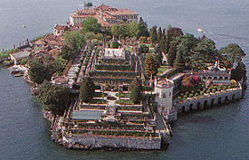
ベッラ島空撮写真。
もちろんガイドブック転載。ちなみにこのページではガイドブックからの転載が多い。夕方に行ったので暗い写真ばっかりなのだよ。
で、折角何万リラもした（といっても千円ちょい）本を買ったので有効に活用させていただく事にした。
軍艦島のようなこぼれ落ちそう具合である。
イタリア屈指の装飾要塞の様相を呈している。
で、船着き場から上陸するとまずは宮殿である。
ここはグロッタ（人工洞窟）がある事でその名を知られている。
早速中に入ってみる。おっと、撮禁かい。
内部は絵に書いたようなコッテコテ装飾。絵に書いたような「贅の尽し方」だ。
で、地下に下りていく。一階がすでに海面より高い位置にあるので地下といっても湖面よりも上。窓からは湖面が迫っている。
ここには6つの部屋があり、ここが全部グロッタになっている。
グロッタとは小石、石灰石などを丹念に張り付けた人工洞窟風の装飾の事でグロテスクという言葉の語源にもなっている。
いわばグロテスクという概念の発生場所でもあるわけだ。
ここでは石を丹念に貼って海底世界を作り上げている。
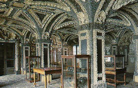 （転載）
なぜここまで、と思うくらいの熱の入れようである。
そしてグロッタ部屋を過ぎると地下から最上階に至る4層分の楕円形の吹き抜けがあるのだが、その吹き抜けの壁にそって螺旋階段が取り付けられている。
それが3メートル以上の平板状の石が全部片方の壁に面した部分だけで支えられている片持ち張りの物凄く不安定な取り付き。大丈夫なのか？
で、一階に戻ると大きなホールには何枚ものゴブラン織りの大きなタペストリー。
すべてが動物の殺しあい食い合いというゲロゲロの図柄。この辺、館主の趣味なんでしょうなあ。
まさにグロテスク。
で、いよいよ建物を出て庭に。
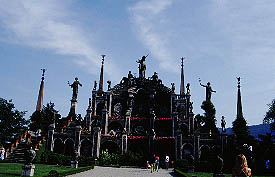 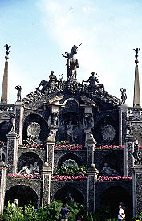 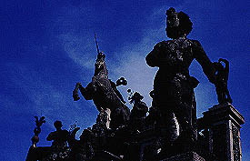
これが庭の正面である。ここもグロテスク魂全開なのである。
一番上に一角獣を掲げたこの幻想モニュメント。濃ゆいぞ。
足元には孔雀がウロウロ歩いていていかにも貴族の別荘風で「けっ」てな感じではある。
で、そんな中に変な人達を発見。
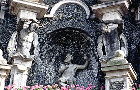 ←ふたりそろって線対称で「いや〜まいちゃった」的ポーズ
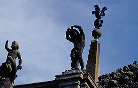 ←コレは誰がなんと言ったって「な〜んちゃって」でしょう。
この辺の変なポーズは確信犯的ですらある。
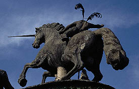
一角獣の後姿。写実的なのにやけに尻尾だけがいい加減。これじゃあウ○コですよ・・・
で、一角獣の後にまわるとテラス状の広場にでる。ここからは対岸のストレーザの街が良く見える。
さらにこのテラスの下には十段の雛壇状の庭がある（一番上の空撮写真を参考にされたし）。
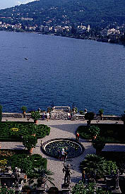 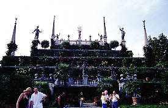
写真では判りにくいが塔の上や石像が掲げている植物は全部金属（多分ブロンズ）製である。これが結構あちこちにある。
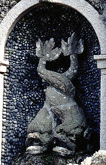
絡み合った鯱。グロッタの中にもいた。ここのシンボルか？
で、庭なんぞをふらふらしているとそろそろ閉園の時間となってしまった。
16世紀のイタリア庭園＆建築の濃ゆ〜い部分を圧縮した文字どおりグロいところでした。
船着場までの道は一大御土産ストリート。こればっかりはボロッメオさんも想像しなかったのでは・・・
これでイタリアの珍寺（？）巡りはお終い。気が付けば今回訪れたところはどれも16世紀から17世紀にかけてつくられたものばかりだった。これは北部イタリアが経済、政治的にヨーロッパの中で黄金時代を迎えていた時期に当たる。そして美術史的にはルネサンスから西洋美術史上最大のコッテコテ＆グログロのスタイルを有するバロック期に移項する時期である。いってみればイタリアのあだ花的な時代だったのだ。イタリア人が変な庭や建物を造ったことによってバロックという時代が出現してしまったのか、たまたまバロックという時代にイタリア人が金を得てしまったのか、どちらかは知らないが当時、ヨーロッパで一番変な金の使い方をしていたのは間違い無いだろう。バブル期の日本に於いて大観音や仏教テーマパーク等の珍寺がバンバン建てられた現象と似ているような気がする。そんな時代に人は欲望の趣くままにその内的なものをストレートに外側に表現してしまうのだろうか。で、結論。
何百年も前からこんなアホなものつくってたのかあ・・・
おしまい
珍寺大道場in伊太利
珍寺大道場 HOME